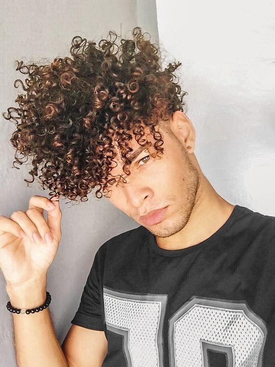

Curl Kings

-A realeza dos cachos-
Quantos negros de cabelo crespo que não usam o cabelo raspado você conheceu na sua infância e adolescência? Hoje pode até ser mais fácil encontrar homens com seus fios cacheados ou crespos expostos por aí. Devido a todo o movimento de empoderamento do negro nos últimos anos. Entretanto, é recorrente na vida dessas pessoas crescerem sem nem ao menos conhecerem a própria textura de cabelo… E não foi diferente com o Vagner: “É muito comum que nós, homens e meninos pretos, tenhamos o cabelo raspado desde criança.” relatou ele e continuou:
“A gente já cresce com o cabelo raspadinho, na verdade, não sabemos nem como é o nosso cabelo.”
Já pensou passar a vida inteira sem ao menos conhecer o próprio cabelo? Algo que deveria ser tão natural, mas, na realidade de quem tem os fios crespos ou cacheados não é! Pois existem aos cruéis padrões de beleza impostos pela sociedade em que vivemos.